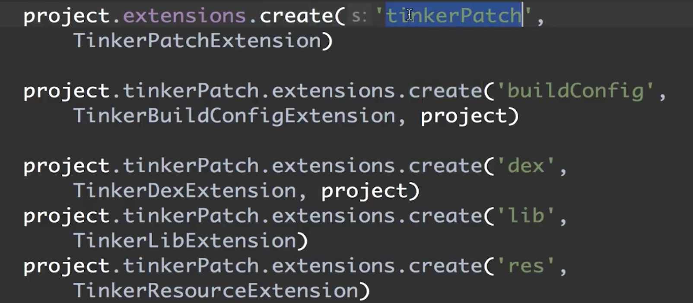
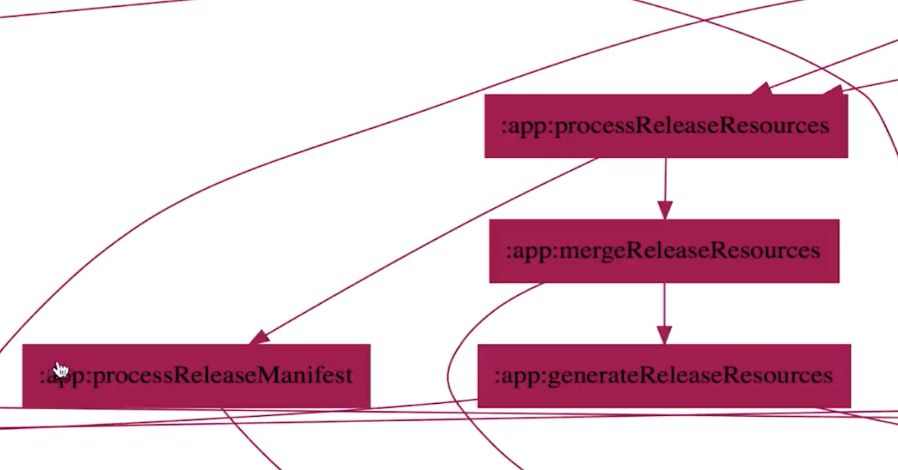

1.两个判断前一个条件的意义deftFile != null、file.text != null
2. readTask不能读取当前写入的内容，应该是顺序不对导致的
定义及配置
定义
//直接通过task函数创建
task helloTask {
println 'this is helloTask'
}
//通过TaskContainer函数创建，this.tasks得到TaskContainer
this.tasks.create(name:'helloTask2'){
println 'this is helloTask2'
}
TaskContainer相当于task的管理类，管理project中的所有task
配置
//1.创建时配置
task helloTask(group:'123', description:'task study') {
println 'this is helloTask'
}
//2.调用配置方法
this.tasks.create(name:'helloTask2'){
setGroup('123')
setDescription('task study')
println 'this is helloTask2'
}
执行详解
让task执行于执行阶段，doFirst、doLast。gradle默认给我们提供了一些task，doFirst为已有的task之前添加相应的逻辑，doLast为已有的task之后添加相应的逻辑
task helloTask(group:'123',description:"task study") {
println 'this is helloTask'
doFirst {
//指定哪些代码执行于执行阶段
println 'task group is:'+group
}
doFirst{}//可以写多个，顺序执行
}
//可以在外部调用
helloTask.doFirst {
println 'task description is:'+description
}
计算build执行时长
def startTime,endTime
this.afterEvaluate { Project project ->
//确保要找的task已经配置完毕
def preBuildTask = project.tasks.getByName('preBuild')
preBuildTask.doFirst {
startTime = System.currentTimeMillis()
println 'start time is:'+startTime
}
def buildTask = project.tasks.getByName('build')
buildTask.doLast {
endTime = System.currentTimeMillis()
println "build time is: ${endTime - startTime}"
}
}

依赖详解
task taskX {
doLast{
println 'taskX'
}
}
task taskY {
doLast{
println 'taskY'
}
}
task taskZ(dependsOn:[taskX,taskY]) {
doLast{
println 'taskZ'
}
}
//或者
taskZ.dependsOn(tasxX,taskY)

动态指定
task taskZ(dependsOn:[taskX,taskY]) {
//动态指定依赖以lib开头的task
this.afterEvaluate {
dependsOn this.tasks.findAll { task ->
return task.name.startsWith('lib')
}
}
doLast{
println 'taskZ'
}
}
//<< == doLast
task lib1 << {
println 'lib1'
}
task lib2 << {
println 'lib2'
}
task noLib << {
println 'noLib'
}
同一个文件中前面的task优先配置，这时候还没有把lib1添加到TaskContainer中，可以通过添加监听配置,或者将被依赖的task写在前面，这样读取配置的时候可以优先添加到TaskContainer。通过方法参数添加的就没有这个问题
例子
task handleReleaseFile {
def srcFile = file('releases.xml')
def destDir = new File(this.buildDir,'generated/release/')
doLast{
println '开始解析对应的xml文件'
destDir.mkdir()
def releases = new XmlParser().parse(srcFile)
releases.release.each { releaseNode ->
//解析每个release节点内容
def name = releaseNode.versionName.text()
def versionCode = releaseNode.versionCode.text()
def versionInfo = releaseNode.versionInfo.text()
//创建文件并写入节点数据
def destFile = new File(destDir.path+"release-${name}.txt")
destFile.withWriter { writer ->
writer.write("${name} -> ${versionCode} -> ${versionInfo}")
}
}
}
}
task handleReleaseFileTest(dependsOn:handleReleaseFile){
def dir = fileTree(this.buildDir.path+'/generated/release/')
doLast{
dir.visit { FileTreeElement element ->
println 'the file name is'+element.file.name
}
println '输出完成'
}
}

输入输出
输入输出接收的类型
输入是任意的对象及文件
输出只接收文件类型
ext{
versionName = '1.0.0'
versionCode = '100'
versionInfo = 'App的第1个版本，上线了一些最基础核心的功能.'
deftFile = file('release.xml')
if(deftFile != null && !deftFile.exists()){
deftFile.createNewFile()
}
}
import groovy.xml.MarkupBuilder
task writeTask {
//为task指定输入
inputs.property('versionName',this.versionName)
inputs.property('versionCode',this.versionCode)
inputs.property('versionInfo',this.versionInfo)
//为task指定输出
outputs.file deftFile
doLast{
//获取要写的数据，已Map的形式返回
def data = inputs.getProperties()
//获取要写入的文件
File file = outputs.getFiles().getSingleFile()
//将map转换为实体对象
def versionMsg = new VersionMsg(data)
//实体对象转换为xml
def sw = new StringWriter()
def xmlBuilder = new MarkupBuilder(sw)
if(file.text != null && file.text.size() <= 0){
//文件中没有内容
xmlBuilder.releases {
release {
versionCode(versionMsg.versionCode)
versionName(versionMsg.versionName)
versionInfo(versionMsg.versionInfo)
}
}
file.withWriter { writer ->
writer.append(sw.toString())
}
} else{
xmlBuilder.release{
versionCode(versionMsg.versionCode)
versionName(versionMsg.versionName)
versionInfo(versionMsg.versionInfo)
}
def lines = file.readLines()
def lengths = lines.size() - 1
file.withWriter { writer ->
lines.eachWithIndex { String line, int index ->
if(index != lengths){
writer.append(line + '\r\n')
}else if(index == lengths) {
//在最后一行前插入
writer.append(sw.toString() + '\r\n')
writer.append(lines.get(lengths))
}
}
}
}
}
}
class VersionMsg {
String versionName
String versionCode
String versionInfo
}
task readTask{
inputs.file deftFile
doLast{
def file = inputs.files.singleFile
println file.text
}
}
task taskTest {
dependsOn readTask,writeTask
doLast{
println '输入输出任务结束'
}
}
通过deftFile相关联，执行的时候就有先后顺序，输出task先执行（有问题，顺序不对）
挂接自定义Task到构建过程中
mustRunAfter
task taskA {
doLast{
println 'taskA'
}
}
task taskB {
mustRunAfter taskA
doLast{
println 'taskB'
}
}
task taskC {
mustRunAfter taskB
doLast{
println 'taskC'
}
}
./gradlew taskB taskC taskA

build之后执行writeTask
this.project.afterEvaluate { project ->
def buildTask = project.tasks.getByName('build')
if(buildTask == null){
throw GradleException('build task not found')
}
buildTask.doLast{
writeTask.execute()
}
}
挂接到指定位置（参考Tinker）
Plugin类似于Java的Jar包，封装了一些完成特定功能的task，必须实现apply方法

为project扩展属性
Tinker只能在Android应用中
变体就是APK，Android有渠道和buildTypes，每一个变体就是两者的排列组合

挂接到指定位置，processReleaseManifest这个任务执行完之后变体的Manifest文件就被生成了，generateReleaseSources执行完之后apk所有资源就生成了
类型
gradle对已有的api进行封装，把这些API的使用封装到task里